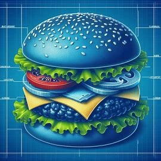

Storytelling can help us envision possible futures. How can we use this to promote the public's engagement with science?
View Details →There's a lot of research on how people decide what to read online. How can we synthesize that research, simulate social media ecosystems, and predict how people decide what to read?
View Details →HCI researchers regularly write implications for designers, practitioners, and policymakers in their papers. What are they suggesting, how do they leverage evidence, and what can we learn about how our research is being translated into action?
View Details →
What do people think when they hear the term "processed food?" Where do these mental models come from, and how can we improve nutrition through science communication?
View Details →What role can AI systems play in helping online creators speak out against hateful speech?
View Details →